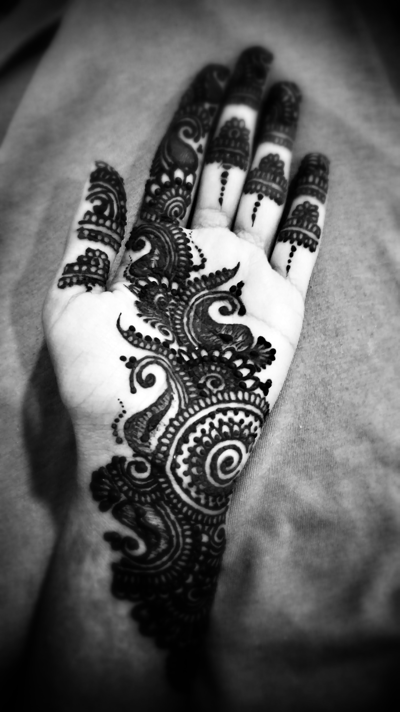
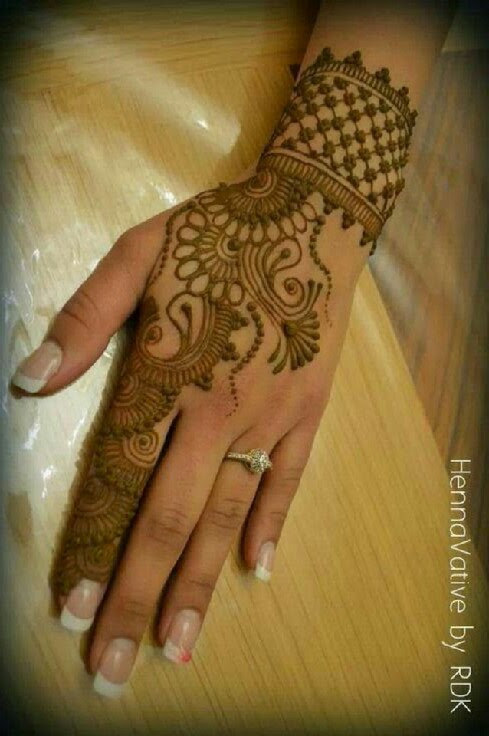
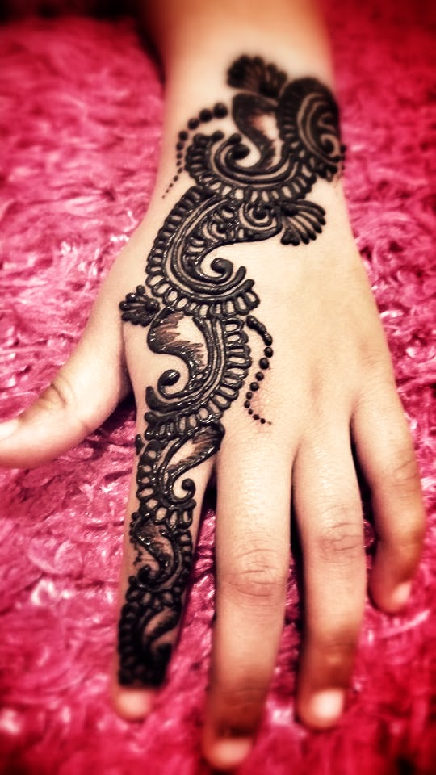
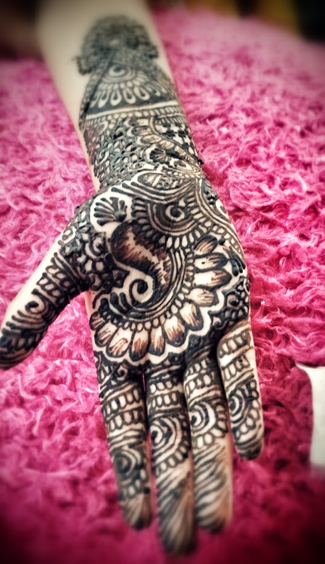
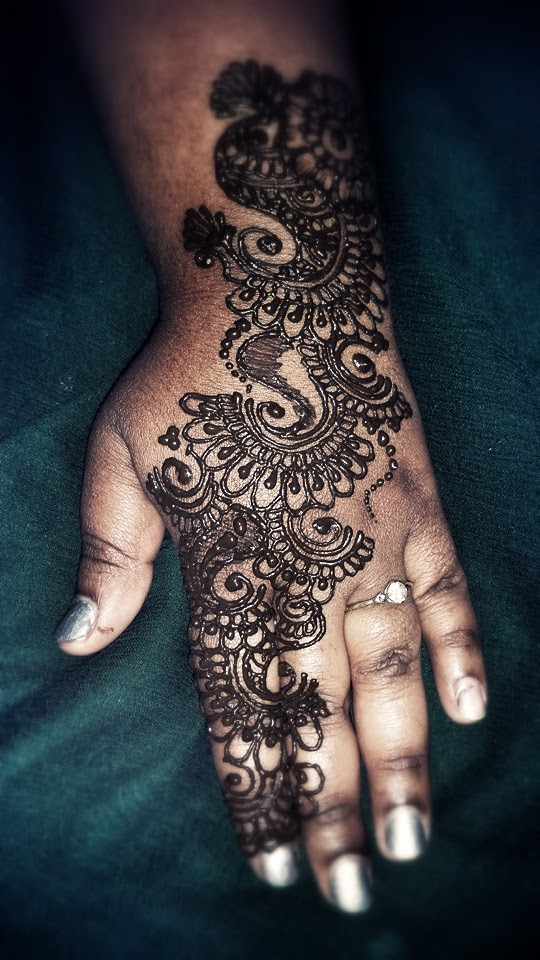
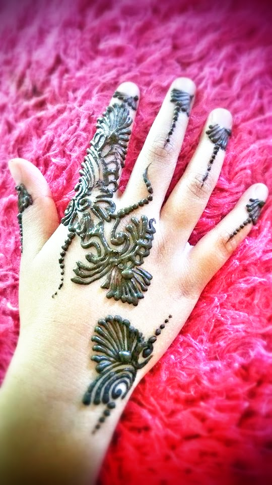
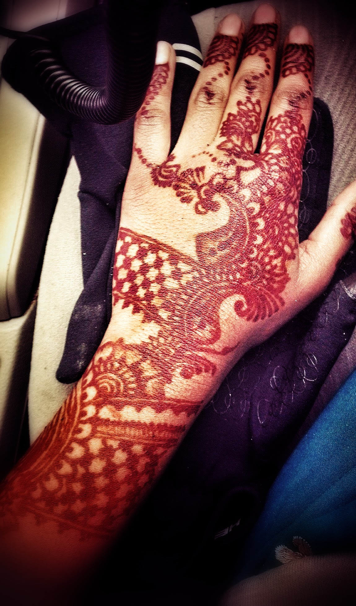

Henna: I have been doing henna since I was 12. I drew henna for fun, for specials occasions and celebrations. At the age of 13, I had my first bridal henna project, and since then, it is a hobby that has been a hidden talent and grown with time. I have realized that any talent without practice is vein.
Portrait: I have drawn and colored from a range of disney characters to pencil drawings, and self-portrait drawings from the age of 9. I realized at the age of 14, while drawing portraits from a given image that I am able to draw portraits free hand (without the use of grids).